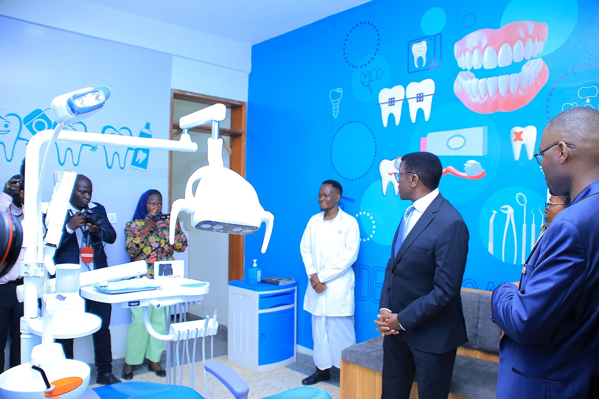
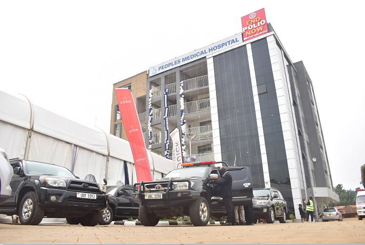
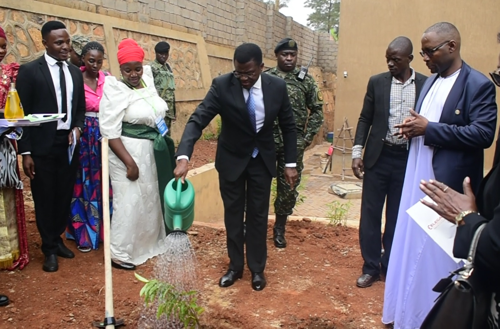
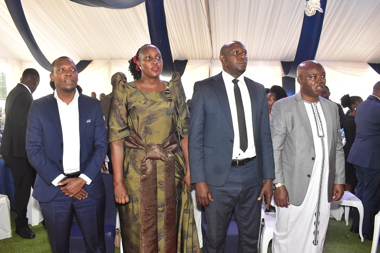
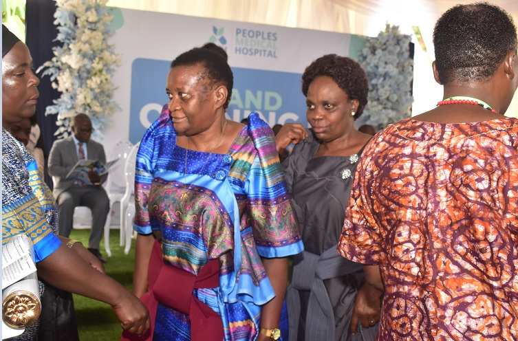
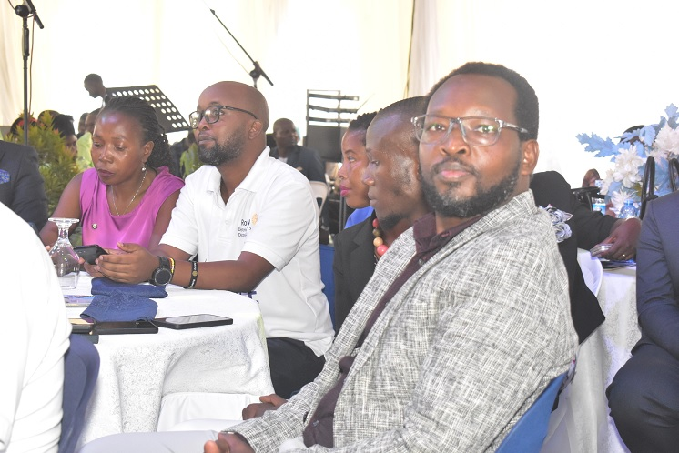

KATIKKIRO CHARLES PETER MAYIGA HAILS DR. FRANK NDUGGA FOR HEALTHCARE EXCELLENCE

Owek. Charles Peter Mayiga (black coat) plants a commemorative tree at the launch. (Tap photo to enlarge)
GAYAZA — People’s Medical Hospital was officially opened by Owek. Charles Peter Mayiga, the Katikkiro of Buganda, in a grand celebration attended by hundreds of residents, politicians, cultural leaders, and medical fraternity members.
The Katikkiro and guests began the event by inspecting the various wards, labs, and modern equipment at Peoples Medical Hospital. He expressed his thrill at seeing "up-to-date technology and a touch of class" in patient handling, a standard he noted is rhyming with what the Buganda 2026 theme of #Yimusa Omutindo.
To commemorate the day, the Katikkiro planted a tree in the hospital compound, symbolizing Buganda's commitment to growth, health, and a healthy environment for the Kabaka's people.
— Owek. Charles Peter Mayiga
A United Community Effort
The event was a powerful gathering of local and national leadership. Stakeholders applauded Dr. Frank for his patience in growing the hospital from a small place into a spacious and modern structure. The support shown by the community confirmed that this facility is a welcome and vital addition to Gayaza Corridor.

THE GENESIS: Escape from Traffic
During his emotional speech, Dr. Frank Ndugga, the visionary founder, shared the inspiring story of how the hospital actually started.
"While working at Mulago Hospital, my wife and I planned to start elsewhere. But I often faced heavy traffic jam on the Gayaza road. One day, I chose to 'branch off' through Bulamu to escape the jam—and that is where I found the space that would become the clinic," Dr. Frank narrated.
He expressed deep gratitude to his family, the patient staff, and the Buganda Kingdom for their partnership, adding, "We chose to stay near home to serve our people."
People’s Medical Hospital now stands as the very first hospital of its standard in the Gayaza corridor, setting a new history for healthcare in Kasangati Town Council.
PHOTO GALLERY: THE GRAND OPENING





